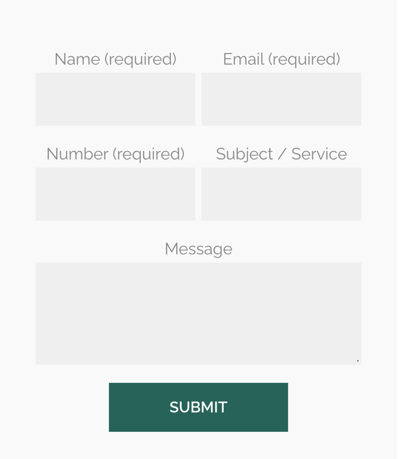

Lloyd-Davies Garden Services: estimates and repeat work with less legwork
I went through your website on a phone, the way a homeowner in Flintshire looking for a gardener would, and read your homepage, contact page and each service page. It's clear what you do and where you work, and your reviews are glowing. Where I think you'd save time and win more work is in how estimates are given and how customers come back.
What's already working
Three things I'd change
Price smaller jobs from photos
Your service pages say "Once we have an idea of what you require, we can provide you with an estimate free of charge." Your enquiry form asks for a name, email, number, service and message, with no way to add photos.

Every estimate means a call or a trip out before the customer hears a price. For a hedge trim or a one-off clearance, that's a lot of driving for a small job.
- Your form asks which service, roughly how big the garden is, and for a few photos.
- For simple jobs it shows a guide price range from your own rates straight away.
- You confirm the price, or book a visit only when the job really needs one.
Catch calls while you're out working
Your pages ask people to "give us a call" on 01244 815 222 or 07859 911 184, and you carry out "regular maintenance, weekly, fortnightly, or monthly" in customers' gardens.
With a mower or hedge trimmer running, the phone goes unheard, and someone wanting a quote may simply ring the next gardener.
- A missed call gets a text back within a minute: sorry we missed you, we're out on a job.
- The text links to your enquiry form, so they can send photos or ask for a call back.
- At the end of the day you see every missed caller in one list, with what they wanted.
Remind past customers when lawns are due
Your garden maintenance page says "We recommend scarifying your lawn for the first time each year in spring after the last frost", and calls overseeding "a recognised essential part of annual lawn maintenance".
One-off customers often forget until the lawn looks poor, then ring whoever they find first. A message at the right time brings that work back to you.
- Everyone who's had lawn work goes on a simple list, with the date of the job.
- In early spring a short message goes out by itself: time for scarifying and overseeding, reply to book.
- Replies come to you in one list, ready to fit into your rounds.
Your website, answering for you
An assistant that answers the questions you get asked again and again, at any hour. These answers come only from your own website: your homepage, contact page and service pages.
Anything it can't answer, it passes to you with the customer's details.
What happens next
For five local businesses I'm setting up one of these for free, in return for an honest review. Pick whichever would help most.
I'm Tom Williams and I run Tomoni-AI. If a 20-minute chat would help, reply to my email or give me a ring.
Call 07971 512158Email Tom